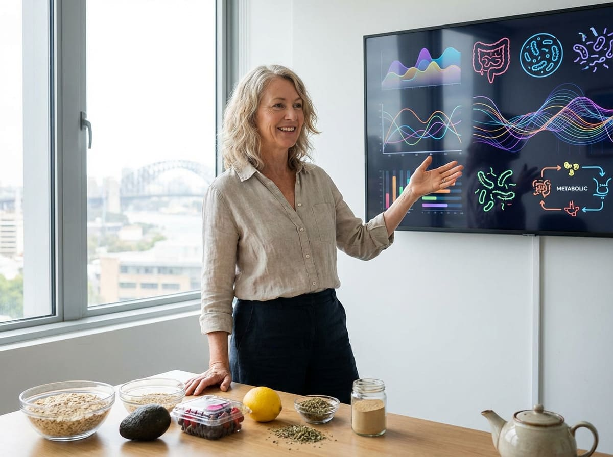
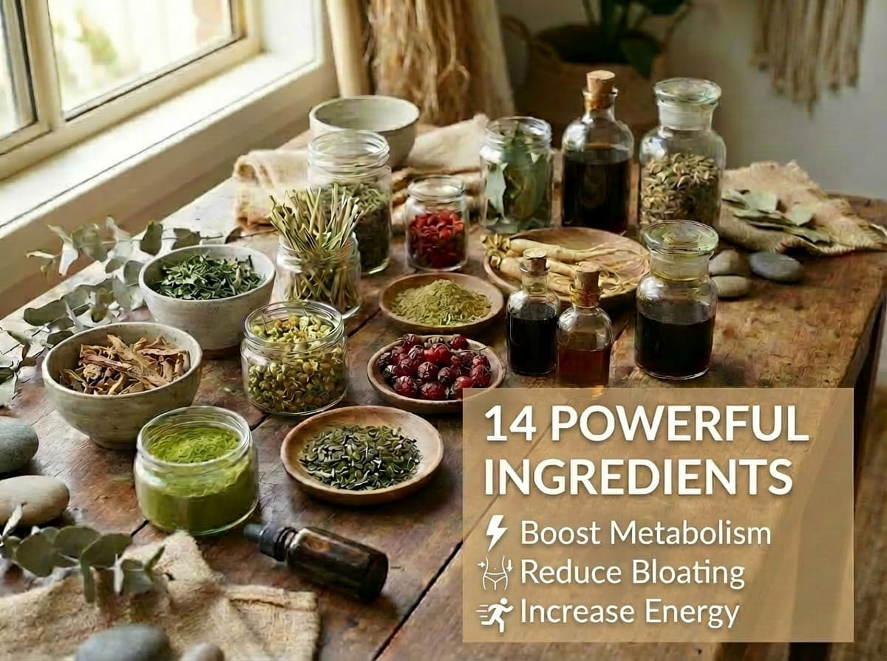
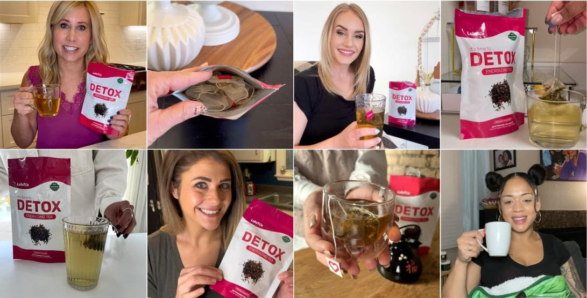

Advertorial
One Teaspoon Every Night – For Liver Detox and Belly Fat Reduction (It's Surprising!)
Nutritionist reveals why 66% of New Zealand adults struggle with weight loss – and the simple secret that's changing everything

AUCKLAND – If you're one of the 66% of New Zealand adults classified as overweight or obese, constantly battling the scales despite trying every diet from keto to intermittent fasting, you're not alone.
New research into the gut microbiome has revealed a surprising truth: the reason most diets fail has nothing to do with willpower, calorie counting, or even how much you exercise.
"We've been approaching weight loss completely wrong," says Dr. Sarah M., a leading nutritionist who's been studying metabolism at an Auckland research institute for over 15 years. "Studies show that gut microbiome imbalance and chronic inflammation can slow metabolism by up to 40%, making weight loss nearly impossible until you address these underlying issues."
The Growing Crisis: Obesity costs New Zealand over $2 billion annually in direct healthcare costs, with wider economic impacts reaching $17 billion per year. Two-thirds of Kiwi adults are now overweight or obese – one of the highest rates in the OECD.
This revelation comes at a critical time. With New Zealand obesity rates continuing to climb and the unpredictable weather making outdoor exercise a challenge, Kiwis are desperately seeking solutions that actually work – especially after the weight many gained during lockdowns.
The breakthrough came from an unlikely source: two New Zealand sisters who stumbled upon a centuries-old secret during a European OE.
The Monastery Discovery That's Transforming Kiwi Bodies
Aroha and Mere T., two sisters from Wellington, had tried everything available in New Zealand. Between them, they'd spent thousands on weight loss programmes, gym memberships, meal delivery services, and countless attempts to "start fresh" on Monday. Nothing worked long-term.
"I was at breaking point," recalls Aroha, 46. "I couldn't enjoy beach days at Oriental Bay with my kids anymore. I was hiding behind baggy clothes even in summer. I was constantly out of breath just walking up the hills. My GP just kept telling me to eat less and move more, but it wasn't working."
During a hiking holiday in Bavaria, Germany, the sisters visited a Benedictine monastery. What they noticed was remarkable: despite living relatively sedentary lives, the monks – many in their 70s and 80s – maintained healthy weights and showed incredible vitality.
"These monks weren't at the gym or following the latest fad diet," Mere explains. "Yet they had more energy than people half their age. We had to know their secret."
The secret? A special herbal tea blend the monks had been drinking daily for centuries – a carefully crafted combination of 13 powerful natural ingredients.
"For over 800 years, we've used these herbs to maintain our health and vitality. The body has an incredible ability to heal and regulate itself when given the right natural compounds."
– Brother Thomas, 82-year-old Benedictine monk
Why Kiwi Diets Keep Failing
Before understanding how this monastic tea works, it's crucial to understand why traditional dieting approaches fail, especially for New Zealanders.
According to research from New Zealand universities, our modern Kiwi diet – high in processed foods, takeaways, and the odd glass of sav – disrupts the gut microbiome, creating conditions for weight gain:
- Gut dysbiosis (microbiome imbalance) triggers inflammation and slows metabolism
- Chronic low-grade inflammation from processed foods promotes fat storage
- Disrupted gut bacteria affects hunger hormones like leptin and ghrelin
- Impaired liver function from alcohol and fatty foods reduces fat burning
"When your gut microbiome is imbalanced, it triggers systemic inflammation," explains Dr. James K., a gastroenterologist from Christchurch who has studied digestive health for over 20 years. "This inflammation affects metabolism, insulin sensitivity, and fat storage. Until you restore gut balance, weight loss will always be an uphill battle."
This explains why so many Kiwis experience:
- Constant bloating and digestive issues after meals
- That dreaded afternoon energy slump at work
- Uncontrollable cravings for Whittaker's and hot chips
- Weight that won't budge despite eating healthy
- Brain fog and poor concentration
- Joint pain that makes hiking uncomfortable
- Disrupted sleep and waking up exhausted
The Hidden Toll: Beyond the numbers on the scale, carrying extra weight takes a profound toll on New Zealanders' daily lives. Many Kiwis find their confidence slowly eroding – avoiding photos at weddings and 21sts, skipping the local tramping club, feeling self-conscious at family barbecues and hangi. The emotional weight is just as heavy as the physical.
The Science Behind the Monastery Tea

Intrigued by their discovery, the T. sisters spent the next year researching each herb and working with nutritional scientists in New Zealand to understand exactly how this ancient formula worked.
What they found was remarkable. Each of the 14 superfoods plays a specific role:
Matcha Green Tea: Rich in amino acids, antioxidants, and contains EGCG for calorie-burning properties.
Yerba Mate: Energises and improves mental clarity without the jitters that come with coffee.
Oolong Tea: Known for its calming effect, rich in calcium, potassium, and vitamins A, B, C, E, and K.
Milk Thistle: Believed to protect the liver while being rich in silymarin.
Dandelion Leaf: Filled with potent antioxidants that may help fight inflammation and assist weight loss.
Plus 9 more powerful ingredients: Sencha Green Tea, Goji Berries, Ginseng, Lemongrass, Nettle Leaf, Guarana, Stevia Leaf, and Citric Acid – all working together to boost metabolism, reduce bloating, and increase energy.
Clinical Trial Results: In a 12-week study involving participants from the Pacific region, those who consumed this herbal blend daily experienced significant weight loss without changing their diet or exercise routine. Participants also reported increased energy and improved digestion.
Real New Zealand Success Stories
Since launching their special tea blend called Lulutox in New Zealand, the T. sisters have received thousands of success stories from fellow Kiwis who had all but given up on weight loss.
"I've tried every diet going – keto, 5:2, shakes, you name it. Nothing worked long-term. But after just two weeks of drinking Lulutox with my morning cuppa, I noticed my clothes fitting looser. After 10 weeks, I'd lost 18kg and felt better than I had in years. My knees don't ache anymore, I'm sleeping through the night, and I finally have energy to walk along Mission Bay in the evenings!"
– Michelle R., 52, Auckland
"Working shifts at the hospital, maintaining a healthy diet was nearly impossible. Lulutox fits perfectly into my routine – I just brew a cup each morning. I've lost 20kg in 8 weeks and my energy is through the roof. My colleagues keep asking what I'm doing differently! Best of all, my blood pressure has come down and my GP is stoked."
– Dave M., 45, Wellington
"After having three kids, I thought I'd never get my body back. Between the school runs and working part-time, I had no time for myself. Lulutox proved me wrong. Down 15kg in 7 weeks and I actually have energy to keep up with the kids at the park. My back pain has nearly disappeared and I'm not afraid to look in the mirror anymore. Best investment I've ever made!"
– Emma S., 38, Christchurch
Why This Works When Everything Else Fails
Traditional diets focus on restriction – cutting calories, eliminating food groups, or following complicated meal plans. But this approach ignores the real problem: an imbalanced gut microbiome that's programmed to store fat.
Lulutox works differently. Instead of fighting against your body, it works with it by:
- Restoring gut balance – Supporting beneficial bacteria growth
- Reducing inflammation – Calming systemic inflammation that drives weight gain
- Optimising metabolism – Helping your body burn fat naturally
- Balancing hormones – Regulating hunger hormones like leptin and ghrelin
- Improving digestion – Enhancing nutrient absorption and reducing bloating
The result? Your body naturally begins releasing stored fat while you feel more energised than ever. No hunger, no exhaustion, no complicated rules to follow.
How to Use Lulutox for Maximum Results
Using Lulutox couldn't be simpler – perfect for busy Kiwi lifestyles. Just steep one tea bag in hot water for 4-6 minutes. It has a smooth peach flavour that's absolutely delicious! Enjoy it hot on a chilly Wellington day, or chilled when the summer heat kicks in. Drink it once or twice daily – ideally in the morning or early afternoon.
Within the first week, most people notice:
- Less bloating and better digestion
- More energy throughout the day
- Reduced cravings for sugary snacks
- Better sleep quality
By week 4, the real transformation begins:
- Visible weight loss (average 5-8kg)
- Clothes fitting noticeably looser
- Clearer skin and brighter complexion
- Improved mood and mental clarity
- Reduced joint pain and improved mobility
Special Offer for New Zealand Residents - 70% OFF!
The T. sisters initially planned to sell Lulutox for $89.90 per pack – still a fraction of what people spend on gym memberships or diet programmes that don't work. But they had a different vision.
"We didn't create Lulutox to get rich," Aroha explains. "We created it because we know how frustrating and hopeless weight loss can feel. We want every Kiwi to have access to this solution, especially with summer coming up."
That's why they've decided to offer a limited-time special promotion for new New Zealand customers…
That's less than a dollar per day – cheaper than your daily flat white from the local cafe!
Lulutox Exclusively made for every age! Choose your age group and find the best solution for you!
Important Stock Update: Due to overwhelming demand after being featured on New Zealand morning shows and in major health magazines, Lulutox has sold out 3 times in the past month. Current stock is limited and expected to run out very soon.
Zero Risk With 30-Day Guarantee
Your Success Is Guaranteed
Try Lulutox for 30 days. If you don't see significant results – if you don't lose weight, feel more energised, and love how you feel – simply return the unused portion for a full refund. No questions asked.
You have nothing to lose except the weight!
Summer Is Coming – The Choice Is Yours
You can continue struggling with diets that don't work, hiding behind loose clothes at the beach, feeling frustrated and exhausted…
Or you can try something different. Something that's already worked for thousands of Kiwis just like you. Something backed by centuries of wisdom and modern science.
Remember, with the 30-day guarantee, you're not risking anything. But by not trying Lulutox, you're risking another summer of feeling uncomfortable at the bach, another year of failed diets, maybe another decade of carrying weight that's holding you back from living your best life.
Claim Your Special Price Now →"I wish I had found Lulutox years ago. I spent thousands on personal trainers, meal plans, and weight loss clinics. This simple tea has given me better results than all of them combined. I'm 47 and finally have the confidence to wear togs at Mount Maunganui. My husband says I look like the woman he married 20 years ago. My only regret is not finding this sooner!"
– Karen W., 47, Tauranga
Final Warning: Only a few units remain at this special 70% OFF price of $27.99. Once gone, the price returns to $89.90. Based on current demand, we expect to sell out within 72 hours. Don't miss your chance to transform your body before summer!

Comments
References:
- Ministry of Health NZ – Obesity Statistics: https://www.health.govt.nz/...
- Clinical Nutrition – EGCG Weight Loss Study (856mg): https://pubmed.ncbi.nlm.nih.gov/26093535/
- Gut Microbiome and Obesity Research: https://pmc.ncbi.nlm.nih.gov/articles/PMC7333005/
- Health New Zealand – Te Whatu Ora: https://www.tewhatuora.govt.nz/